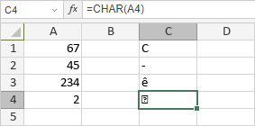

Funkcija CHAR
Funkcija CHAR je jedna od tekstualnih i podatkovnih funkcija. Koristi se za vraćanje ASCII znaka određenog brojem.
Sintaksa
CHAR(number)
Funkcija CHAR ima sledeći argument:
| Argument | Opis |
|---|---|
| number | Broj između 1 i 255 koji određuje znak iz skupa znakova računara. |
Napomene
Kako primeniti funkciju CHAR.
Primeri
Slika ispod prikazuje rezultat koji vraća funkcija CHAR.
